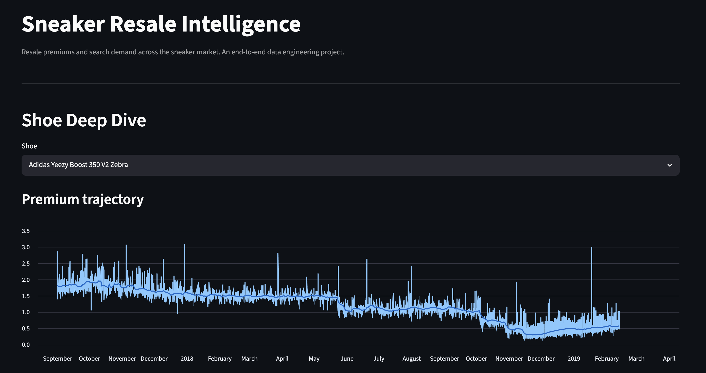

Sneaker Resale Intelligence
RESALE WAREHOUSE · LIVE DASHBOARD
An end-to-end data engineering project that turns real resale data into an analytical warehouse and a live dashboard. It answers the questions I actually find interesting about the resale market: which sneakers carry the highest premium over retail, how that premium decays after a release, and how it varies across sizes and silhouettes. The pipeline ingests about 100K real StockX resale sales, plus Google Trends as a live demand signal, through typed Python clients, lands them as raw JSON, and bulk-loads them into a hand-written PostgreSQL star schema through an idempotent loader.
From there, dbt transforms the raw tables across staging, intermediate, and mart layers, computing the premium economics with SQL window functions. A thin Streamlit dashboard reads the marts directly, so every figure on screen traces back to a tested, modeled table. It's built in public with a clean commit history and full-pipeline CI, with a deployed instance on Streamlit Community Cloud backed by Neon Postgres.
Tools & skills
What I learned
- The decision I spent the most time on wasn't code, it was data sourcing. I started with live APIs (eBay, Reddit) and a tempting StockX scraper, then realized a fragile live feed is a bad foundation for something I want to demo reliably. Choosing a real public dataset as the backbone, and reframing the API clients as documented, tested, future-ready extensions, taught me that "real data" doesn't have to mean "live API."
- The engineering lessons were all about getting the boring things right: putting idempotency in the schema (natural-key constraints plus
ON CONFLICT DO NOTHING) rather than the loader, keeping one clear grain per fact table instead of unioning mismatched sources, and computing a metric like premium exactly once in an intermediate model so every downstream model agrees. - A sharp reminder that
execute_valuesreports only its last page's row count, which sent me toRETURNINGto report loads honestly. - Deploying against a managed Postgres surfaced the real-world details: SSL modes, pooled versus direct connections for DDL, and Google rate-limiting live Trends pulls.
